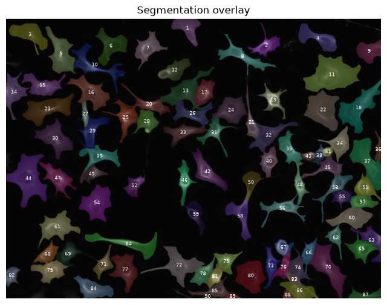
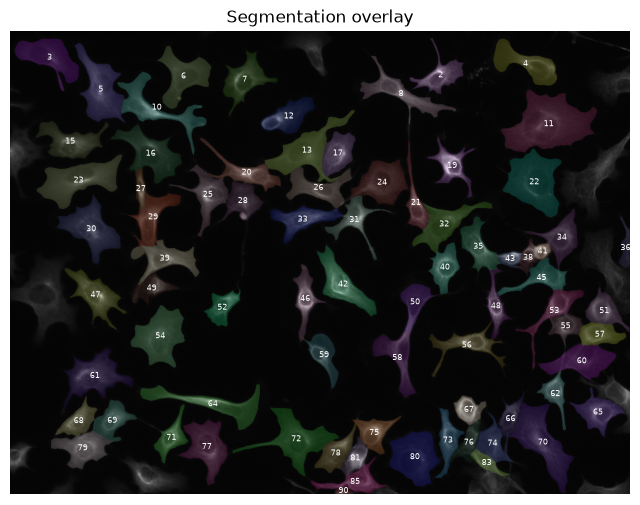
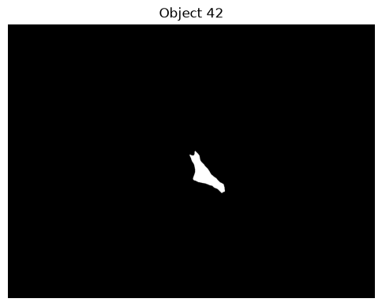
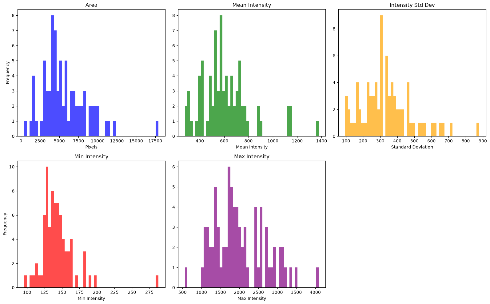
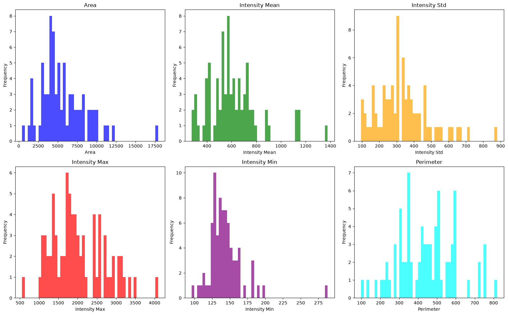
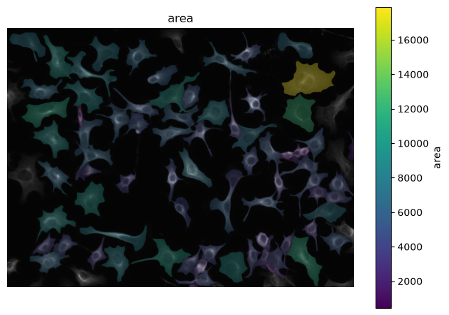

Measurement Pipeline#
# /// script
# requires-python = ">=3.10"
# dependencies = [
# "matplotlib",
# "numpy",
# "scikit-image",
# "scipy",
# "tifffile",
# "imagecodecs",
# "pandas",
# "seaborn",
# "bobiac_tools @ git+https://github.com/bobiac/bobiac-tools.git"
# ]
# ///
Overview#
In this notebook, we will run through a full measurement pipeline.
Our data are two images of cells stained with phalloidin (F-actin). One image is from an untreated control and one from a drug tretment. Our question is: Does the drug change F-actin abundance and/or cell size?
To find out we will learn how to extract single cell properties using the scikit-image library. Moreover, we will learn how to use the pandas library for data handling. Lastly we will brifly introduce seaborn for simple plotting and visualisation.
Importing libraries#
from pathlib import Path
import matplotlib.pyplot as plt
import numpy as np
import skimage
import tifffile
from bobiac_tools import overlay_labels
Load and Display Image and Label Mask#
First we load and display our control image and segmentation. We will walk through how to set up the measurements first and then apply the same strategy to the image of the drug treated cells.
We visualise the image and the segmentation with the overlay function. Hint: if you just want to plot the image use the overlay function with just the image.
image_path = Path(
"../../_static/images/quant/01_measurement_quantification/images/F01_202.tif"
)
label_path = Path(
"../../_static/images/quant/01_measurement_quantification/masks/F01_202w1.TIF"
)
image = tifffile.imread(image_path)[1, :, :]
labeled_mask = tifffile.imread(label_path)
overlay_labels(image, labeled_mask)

(<Figure size 800x800 with 1 Axes>,
<Axes: title={'center': 'Segmentation overlay'}>)
Before we use the segmentation to measure, we need to remove all objects that touch the border, since they are likely not fully in the field of view and therefore not measurable.
# remove objects that touch the border of the image
labeled_mask = skimage.segmentation.clear_border(labeled_mask)
overlay_labels(image, labeled_mask, alpha=0.2)

(<Figure size 800x800 with 1 Axes>,
<Axes: title={'center': 'Segmentation overlay'}>)
As we learned before, the labeled mask is a picture the same size of the raw image that has pixel value 0 for the background and a unique integer > 0 for each segmented object this value we call an objects index. Here, we plotted each segmented object in a different color together with its index.
We can directly access specific objects in our label mask by addressing them using their index.
# create an image that contains only the mask of the indexed object
index = 42
idx_object = (
labeled_mask == index
) # note that == creates a boolean mask by comparing each pixel to the index value, resulting in True for pixels belonging to the object and False for all other pixels
# Plot the extracted nucleus image
plt.figure(figsize=(6, 6))
plt.imshow(idx_object, cmap="gray")
plt.title(f"Object {index}")
plt.axis("off")
plt.show()

This new image we obtained is a boolean mask with value False for background and True for the object with the index we specified.
To verify that this is indeed a binary mask, we can query for the minimum and maximum value using the np.min() and np.max() functions:
print("Data type:", idx_object.dtype)
print("Min value:", np.min(idx_object))
print("Max value:", np.max(idx_object))
Data type: bool
Min value: False
Max value: True
Manual Extraction of Properties#
Now we can use this mask to measure properties of the object such as its area or the fluorescence intensity of that region in the raw image (i.e. the intensity of the cell).
Area measurement#
To measure the area of the object we can make use of the fact that the boolean mask is False or 0 outside of the object and True or 1 inside it.
object_area = np.sum(
idx_object
) # counts the number of True pixels, which corresponds to the area of the object in pixels
print(f"Area of object {index}: {object_area} pixels")
Area of object 42: 7342 pixels
To convert the area in pixels to µm, we can multiply it with the squared pixel size in µm. Here we assume that one pixels has the size 0.325 µm.
pixel_size = 0.325 # µm
object_area_um = object_area * (pixel_size**2)
print(f"Area of object {index}: {object_area_um} um^2")
Area of object 42: 775.4987500000001 um^2
Intensity measurement#
To measure the objects intensity, we can use the boolean mask to index our raw image.
# Extract the intensity values of the pixels that belong to this nucleus from the original image
object_intesities = image[
idx_object
] # this uses the boolean mask to index into the original image
# Print the intensity values and its variable type and shape
print("Type of object_intesities:", type(object_intesities))
print("Shape of object_intesities:", object_intesities.shape)
print(f"Intensity values of object {index}: {object_intesities}")
Type of object_intesities: <class 'numpy.ndarray'>
Shape of object_intesities: (7342,)
Intensity values of object 42: [214 196 217 ... 206 224 197]
We can then calculate the mean intensity using the np.mean() function:
object_mean_intensity = np.mean(object_intesities)
print(f"Mean intensity of object {index}: {object_mean_intensity}")
Mean intensity of object 42: 891.3057749931899
✍️ Exercise: Measure area, basic intensity features for all nuclei in the dataset#
In this exercise, we want to measure for each object in our segmentation mask its area, its mean intensity, the variabilty of its intensity (via standard deviation), and its minimum and maximum intensity values. For this, you can follow these steps:
Create an empty list for each feature (e.g.
area_list).Write a for loop that iterates over all object indices in the segmentation mask.
For each iteration measure all features (useful functions are
np.std,np.min,np.max) and store them in the corresponding list.Plot each feature as a histogram using
plt.hist.
# measure area and intensity statistics for all nuclei in the labeled mask
object_indices = np.unique(labeled_mask)
object_indices = object_indices[object_indices != 0] # skip background
area_list = []
mean_intensity_list = []
std_intensity_list = []
min_intensity_list = []
max_intensity_list = []
for obj_id in object_indices:
mask = labeled_mask == obj_id
intensities = image[mask]
area_list.append(np.sum(mask))
mean_intensity_list.append(np.mean(intensities))
std_intensity_list.append(np.std(intensities))
min_intensity_list.append(np.min(intensities))
max_intensity_list.append(np.max(intensities))
# plot histograms for each feature
plt.figure(figsize=(16, 10))
plt.subplot(2, 3, 1)
plt.hist(area_list, bins=50, color="blue", alpha=0.7)
plt.title("Area")
plt.xlabel("Pixels")
plt.ylabel("Frequency")
plt.subplot(2, 3, 2)
plt.hist(mean_intensity_list, bins=50, color="green", alpha=0.7)
plt.title("Mean Intensity")
plt.xlabel("Mean Intensity")
plt.subplot(2, 3, 3)
plt.hist(std_intensity_list, bins=50, color="orange", alpha=0.7)
plt.title("Intensity Std Dev")
plt.xlabel("Standard Deviation")
plt.subplot(2, 3, 4)
plt.hist(min_intensity_list, bins=50, color="red", alpha=0.7)
plt.title("Min Intensity")
plt.xlabel("Min Intensity")
plt.ylabel("Frequency")
plt.subplot(2, 3, 5)
plt.hist(max_intensity_list, bins=50, color="purple", alpha=0.7)
plt.title("Max Intensity")
plt.xlabel("Max Intensity")
plt.tight_layout()
plt.show()

Automated Extraction of Properties#
The skimage.measure module from scikit-image provides efficient tools for measuring properties of labeled image regions, extracting both morphological and intensity-based features for every object in a single call.
A central function in this module is regionprops_table:
Parameters:
label_image— A 2D or 3D integer array where each unique non-zero value identifies a distinct object.intensity_image(optional) — The corresponding grayscale image, required for intensity-based measurements.properties— A list of property names to measure and compute.
For example:
skimage.measure.regionprops_table(label_image, intensity_image=image, properties=["area", "intensity_mean"])
Returns:
A
dictmapping each property name to an array of values, one per labeled object.
The table below summarizes commonly used properties:
Measurement |
Description |
|---|---|
area |
Number of pixels in the object (size) |
perimeter |
Approximate boundary length |
eccentricity |
Elongation of the shape (0 = circle, 1 = line segment) |
solidity |
Ratio of object area to its convex hull area |
orientation |
Angle of the major axis relative to the horizontal |
intensity_mean |
Mean pixel intensity within the region |
intensity_std |
Standard deviation of pixel intensities within the region |
intensity_max |
Maximum pixel intensity within the region |
intensity_min |
Minimum pixel intensity within the region |
image_intensity |
Pixel values cropped to the object’s bounding box |
centroid |
Center of mass coordinates |
bbox |
Bounding box coordinates |
coords |
List of coordinates of all pixels (y, x) |
A full list of all measurable properties can be found in the regionprops documentation.
Use regionprops_table to extract measurements from labeled_mask and image:
# compute label, area, and mean intensity for each object in the label mask
props = skimage.measure.regionprops_table(
labeled_mask, image, ["label", "area", "intensity_mean"]
)
print("Datatype:", type(props))
print("Keys in props:", list(props.keys()))
print(" ")
print("All features for all objects:\n", props)
Datatype: <class 'dict'>
Keys in props: ['label', 'area', 'intensity_mean']
All features for all objects:
{'label': array([ 2, 3, 4, 5, 6, 7, 8, 10, 11, 12, 13, 15, 16, 17, 19, 20, 21,
22, 23, 24, 25, 26, 27, 28, 29, 30, 31, 32, 33, 34, 35, 36, 38, 39,
40, 41, 42, 43, 45, 46, 47, 48, 49, 50, 51, 52, 53, 54, 55, 56, 57,
58, 59, 60, 61, 62, 64, 65, 66, 67, 68, 69, 70, 71, 72, 73, 74, 75,
76, 77, 78, 79, 80, 81, 83, 85, 90]), 'area': array([ 4669., 7866., 6945., 9735., 7749., 6557., 6720., 8249.,
17915., 5667., 9685., 7023., 8885., 5130., 4424., 5283.,
3591., 12061., 11099., 8175., 6031., 5998., 1666., 4781.,
5855., 9296., 4468., 7140., 5776., 5380., 5296., 1537.,
1799., 6347., 4420., 1146., 7342., 1493., 4633., 4383.,
6771., 3487., 3435., 3970., 4336., 3533., 4712., 9925.,
3105., 5283., 3951., 6008., 4147., 7619., 9089., 3021.,
8045., 5224., 3173., 2997., 3683., 4577., 11277., 3652.,
10223., 4022., 3982., 4145., 2898., 8190., 4238., 6388.,
9504., 2878., 1881., 4198., 441.]), 'intensity_mean': array([ 771.72970658, 276.04614798, 428.92210223, 489.90734463,
313.54006969, 531.85069391, 607.32901786, 520.03867135,
387.32397432, 550.86730192, 370.84068147, 524.72091699,
415.33359595, 650.78908382, 1134.47084087, 732.17963278,
800.3625731 , 301.98126192, 403.33985044, 509.37761468,
601.14641021, 482.10770257, 781.22629052, 533.82911525,
583.11443211, 491.41006885, 725.08102059, 429.24187675,
710.65131579, 578.35260223, 653.70468278, 295.69486012,
737.74430239, 567.36269104, 678.87963801, 1377.995637 ,
891.30577499, 1153.02813128, 580.51327434, 886.05247547,
636.97725594, 904.45683969, 512.7510917 , 413.35994962,
685.34594096, 583.00452873, 639.37860781, 388.63455919,
618.87020934, 746.84194586, 622.40951658, 520.77579893,
427.87412587, 340.75534847, 565.95973154, 750.82985766,
526.5996271 , 591.64165391, 600.9930665 , 1139.01601602,
572.28210698, 547.7920035 , 463.25866809, 651.47590361,
390.00870586, 613.1315266 , 533.22551482, 727.30904704,
561.14837819, 490.27130647, 565.64771118, 706.86161553,
308.16635101, 1134.4447533 , 732.43753323, 704.44807051,
660.78004535])}
regionprops_table creates a dictionary where the keys are the names of the properties and the values are numpy arrays of the measurements of the properties for all objects in the label mask. We can access all area measurements like this: props['area'] and an object-specific area measurement like this: props['area'][index] with index being e.g. 0 for the first object. The order of objects is the same across all property arrays.
print("Area for all objects:\n", props["area"])
print()
# we use index-1 because the label IDs start at 1, but list indexing starts at 0
print(f"Area for object {index}:", props["area"][index - 1])
Area for all objects:
[ 4669. 7866. 6945. 9735. 7749. 6557. 6720. 8249. 17915. 5667.
9685. 7023. 8885. 5130. 4424. 5283. 3591. 12061. 11099. 8175.
6031. 5998. 1666. 4781. 5855. 9296. 4468. 7140. 5776. 5380.
5296. 1537. 1799. 6347. 4420. 1146. 7342. 1493. 4633. 4383.
6771. 3487. 3435. 3970. 4336. 3533. 4712. 9925. 3105. 5283.
3951. 6008. 4147. 7619. 9089. 3021. 8045. 5224. 3173. 2997.
3683. 4577. 11277. 3652. 10223. 4022. 3982. 4145. 2898. 8190.
4238. 6388. 9504. 2878. 1881. 4198. 441.]
Area for object 42: 3487.0
As you can see, we get the same area value we obtained manually before.
✍️ Exercise: Use regionprops_table to measure basic features of all nuclei#
In this exercise, we repeat the exercise above using regionprops_table instead of looping over each object.
Measure area, intensity_mean, intensity_std, intensity_max, intensity_min, and (this one is new) perimeter.
For that you can:
Use regionprops with the appropriate properties.
Use
plt.histto plot a histogram for each property. (You can use a for loop for that if you want to be efficient.)
Note how much less code you have to write compared with the previous exercise.
Bonus: think about how you would implement the perimeter property manually.
properties = [
"area",
"intensity_mean",
"intensity_std",
"intensity_max",
"intensity_min",
"perimeter",
]
props_basic = skimage.measure.regionprops_table(
labeled_mask, intensity_image=image, properties=properties
)
list_colors = ["blue", "green", "orange", "red", "purple", "cyan"]
plt.figure(figsize=(16, 10))
for i, prop in enumerate(properties, start=1):
plt.subplot(2, 3, i)
plt.hist(props_basic[prop], bins=50, color=list_colors[i - 1], alpha=0.7)
plt.title(prop.replace("_", " ").title())
plt.xlabel(prop.replace("_", " ").title())
plt.ylabel("Frequency")
plt.tight_layout()
plt.show()

Tables -> pandas.DataFrame#
Using lists, dictionaries and np.arrays for data analysis works fine, but is a little bit clunky. Here, we introduce a more streamlined and straightforward method for storing and accessing your data. We use the pandas package which is centred around the DataFrame object, an intuitive 2D table that allows basic plotting, labelling of rows, columns and conditional indexing as well as table operations such as melt and pivot and summary statistics like mean or std.
This is a brief interlude before we return to comparing our control and drug treated cells. It will be worth it in the end.
We start by importing pandas and creating a new DataFrame variable.
import pandas as pd
properties = [
"area",
"intensity_mean",
"intensity_std",
"intensity_max",
"intensity_min",
"perimeter",
]
props = skimage.measure.regionprops_table(
labeled_mask, intensity_image=image, properties=properties
)
df = pd.DataFrame(props)
print(df)
area intensity_mean intensity_std intensity_max intensity_min \
0 4669.0 771.729707 522.346755 3509.0 141.0
1 7866.0 276.046148 125.950313 1069.0 117.0
2 6945.0 428.922102 254.124969 1445.0 123.0
3 9735.0 489.907345 267.662076 1934.0 132.0
4 7749.0 313.540070 125.673970 1243.0 124.0
.. ... ... ... ... ...
72 9504.0 308.166351 106.670377 1124.0 159.0
73 2878.0 1134.444753 716.993459 3076.0 182.0
74 1881.0 732.437533 226.545916 1388.0 196.0
75 4198.0 704.448071 275.078981 1605.0 162.0
76 441.0 660.780045 217.495462 1159.0 288.0
perimeter
0 505.209199
1 515.445743
2 453.546248
3 577.363528
4 493.286363
.. ...
72 416.333044
73 245.942172
74 232.249783
75 472.617316
76 98.284271
[77 rows x 6 columns]
Note how tidy this format is. Individual cells are rows containing all measuremnt that relate to that cell and columns are sets of measurements for all cells.
Accessing data in DataFrames#
Accessing columns works similar to dictionaries: df[column] or df[[list_of_columns]].
# Print just the area column
print(df["area"])
0 4669.0
1 7866.0
2 6945.0
3 9735.0
4 7749.0
...
72 9504.0
73 2878.0
74 1881.0
75 4198.0
76 441.0
Name: area, Length: 77, dtype: float64
# Print area and mean intensity columns
print(df[["area", "intensity_mean"]])
area intensity_mean
0 4669.0 771.729707
1 7866.0 276.046148
2 6945.0 428.922102
3 9735.0 489.907345
4 7749.0 313.540070
.. ... ...
72 9504.0 308.166351
73 2878.0 1134.444753
74 1881.0 732.437533
75 4198.0 704.448071
76 441.0 660.780045
[77 rows x 2 columns]
Accessing rows can be done via index using .iloc or by condition using .loc.
First we can access all the properties of the previously selected cell 42.
# again, we use index-1 to access the correct row corresponding to the object with label ID equal to index
print(df.iloc[index - 1])
area 3487.000000
intensity_mean 904.456840
intensity_std 556.336598
intensity_max 2871.000000
intensity_min 144.000000
perimeter 421.119841
Name: 41, dtype: float64
We can index conditionally based on properties. Here we select all cells with an area larger than 3000 pixels.
print(df[df["area"] > 3000])
area intensity_mean intensity_std intensity_max intensity_min \
0 4669.0 771.729707 522.346755 3509.0 141.0
1 7866.0 276.046148 125.950313 1069.0 117.0
2 6945.0 428.922102 254.124969 1445.0 123.0
3 9735.0 489.907345 267.662076 1934.0 132.0
4 7749.0 313.540070 125.673970 1243.0 124.0
.. ... ... ... ... ...
69 8190.0 490.271306 225.867421 1723.0 139.0
70 4238.0 565.647711 311.351420 1863.0 144.0
71 6388.0 706.861616 331.301727 1762.0 147.0
72 9504.0 308.166351 106.670377 1124.0 159.0
75 4198.0 704.448071 275.078981 1605.0 162.0
perimeter
0 505.209199
1 515.445743
2 453.546248
3 577.363528
4 493.286363
.. ...
69 487.830519
70 337.261977
71 418.818326
72 416.333044
75 472.617316
[67 rows x 6 columns]
To fully understand what happened there, we break this line into parts.
# this creates a boolean Series where each value is True if the corresponding row in the 'area' column is greater than 3000, and False otherwise
bool_series = df["area"] > 3000
print("boolean Series:\n", bool_series)
# then we use this boolean Series to index into the DataFrame, which returns only the rows where the condition is True, i.e., where the area is greater than 3000 pixels
print("\nFiltered DataFrame:\n", df[bool_series])
boolean Series:
0 True
1 True
2 True
3 True
4 True
...
72 True
73 False
74 False
75 True
76 False
Name: area, Length: 77, dtype: bool
Filtered DataFrame:
area intensity_mean intensity_std intensity_max intensity_min \
0 4669.0 771.729707 522.346755 3509.0 141.0
1 7866.0 276.046148 125.950313 1069.0 117.0
2 6945.0 428.922102 254.124969 1445.0 123.0
3 9735.0 489.907345 267.662076 1934.0 132.0
4 7749.0 313.540070 125.673970 1243.0 124.0
.. ... ... ... ... ...
69 8190.0 490.271306 225.867421 1723.0 139.0
70 4238.0 565.647711 311.351420 1863.0 144.0
71 6388.0 706.861616 331.301727 1762.0 147.0
72 9504.0 308.166351 106.670377 1124.0 159.0
75 4198.0 704.448071 275.078981 1605.0 162.0
perimeter
0 505.209199
1 515.445743
2 453.546248
3 577.363528
4 493.286363
.. ...
69 487.830519
70 337.261977
71 418.818326
72 416.333044
75 472.617316
[67 rows x 6 columns]
A variety of different logical operations can be used for conditional indexing via .loc.
Those include: <, >, <=, >=, ==, != (not equal to), .isin(list) (equal to any object in list), ~ (not). Morover, multiple conditions can be chained using & (and), | (or) operators (each condition has to be in () parenthesis for this). Visit the excellent pandas tutorial on selecting subsets from DataFrames for more details.
# select all rows where area is greater than 2000 pixels and mean intensity is less than 400 and print their perimeter values
filtered_df = df[(df["area"] > 2000) & (df["intensity_mean"] < 350)]
print(filtered_df)
area intensity_mean intensity_std intensity_max intensity_min \
1 7866.0 276.046148 125.950313 1069.0 117.0
4 7749.0 313.540070 125.673970 1243.0 124.0
17 12061.0 301.981262 110.147358 1173.0 107.0
53 7619.0 340.755348 147.035523 1040.0 130.0
72 9504.0 308.166351 106.670377 1124.0 159.0
perimeter
1 515.445743
4 493.286363
17 506.457936
53 442.037626
72 416.333044
# select all rows where area is exactly 12061 or 9504 pixels
filtered_df = df[df["area"].isin([12061, 9504])]
print(filtered_df)
area intensity_mean intensity_std intensity_max intensity_min \
17 12061.0 301.981262 110.147358 1173.0 107.0
72 9504.0 308.166351 106.670377 1124.0 159.0
perimeter
17 506.457936
72 416.333044
# select all rows where the intensity is between 400 and 750
filtered_df = df[(df["intensity_mean"] >= 400) & (df["intensity_mean"] <= 750)]
print(filtered_df)
area intensity_mean intensity_std intensity_max intensity_min \
2 6945.0 428.922102 254.124969 1445.0 123.0
3 9735.0 489.907345 267.662076 1934.0 132.0
5 6557.0 531.850694 310.226358 2414.0 129.0
6 6720.0 607.329018 376.907922 2428.0 138.0
7 8249.0 520.038671 415.611672 2463.0 130.0
9 5667.0 550.867302 399.259527 2585.0 130.0
11 7023.0 524.720917 343.369644 2445.0 133.0
12 8885.0 415.333596 192.766232 1760.0 144.0
13 5130.0 650.789084 387.129749 2808.0 151.0
15 5283.0 732.179633 468.194163 2493.0 145.0
18 11099.0 403.339850 231.003399 2197.0 136.0
19 8175.0 509.377615 182.485952 1226.0 165.0
20 6031.0 601.146410 418.265806 2730.0 150.0
21 5998.0 482.107703 239.939964 1718.0 157.0
23 4781.0 533.829115 308.510022 2071.0 141.0
24 5855.0 583.114432 299.194434 1785.0 144.0
25 9296.0 491.410069 257.525306 1909.0 129.0
26 4468.0 725.081021 537.681609 2920.0 159.0
27 7140.0 429.241877 168.733295 1367.0 129.0
28 5776.0 710.651316 343.008433 1736.0 150.0
29 5380.0 578.352602 259.563990 1473.0 127.0
30 5296.0 653.704683 351.814492 2581.0 144.0
32 1799.0 737.744302 437.417596 2118.0 157.0
33 6347.0 567.362691 304.717389 1869.0 148.0
34 4420.0 678.879638 372.599326 1938.0 147.0
38 4633.0 580.513274 289.107824 2150.0 124.0
40 6771.0 636.977256 395.232945 3369.0 136.0
42 3435.0 512.751092 359.325306 1930.0 136.0
43 3970.0 413.359950 250.608107 1327.0 139.0
44 4336.0 685.345941 348.491390 2080.0 133.0
45 3533.0 583.004529 364.019584 2028.0 126.0
46 4712.0 639.378608 363.071752 1977.0 136.0
48 3105.0 618.870209 291.752341 2001.0 136.0
49 5283.0 746.841946 464.464457 2709.0 148.0
50 3951.0 622.409517 273.032301 1424.0 123.0
51 6008.0 520.775799 299.795228 1607.0 148.0
52 4147.0 427.874126 333.257662 1781.0 96.0
54 9089.0 565.959732 299.976392 1818.0 139.0
56 8045.0 526.599627 460.823207 2573.0 127.0
57 5224.0 591.641654 302.084874 1842.0 130.0
58 3173.0 600.993066 277.228499 1678.0 136.0
60 3683.0 572.282107 338.883184 1701.0 132.0
61 4577.0 547.792003 301.459817 1641.0 156.0
62 11277.0 463.258668 235.908892 1494.0 114.0
63 3652.0 651.475904 380.678402 1739.0 153.0
65 4022.0 613.131527 335.670502 1820.0 142.0
66 3982.0 533.225515 165.053351 1125.0 130.0
67 4145.0 727.309047 432.531888 2691.0 162.0
68 2898.0 561.148378 250.238582 1353.0 172.0
69 8190.0 490.271306 225.867421 1723.0 139.0
70 4238.0 565.647711 311.351420 1863.0 144.0
71 6388.0 706.861616 331.301727 1762.0 147.0
74 1881.0 732.437533 226.545916 1388.0 196.0
75 4198.0 704.448071 275.078981 1605.0 162.0
76 441.0 660.780045 217.495462 1159.0 288.0
perimeter
2 453.546248
3 577.363528
5 505.623412
6 747.239682
7 818.180808
9 349.847763
11 522.215295
12 562.014285
13 305.421356
15 593.405158
18 578.558441
19 418.676190
20 592.114790
21 506.943218
23 355.155375
24 475.054870
25 513.102597
26 598.842712
27 555.807179
28 458.132034
29 430.374675
30 398.918831
32 206.651804
33 559.771645
34 326.149278
38 439.060967
40 583.967604
42 308.048773
43 317.184812
44 331.776695
45 304.113744
46 588.073160
48 277.208153
49 722.281313
50 281.651804
51 470.611219
52 343.261977
54 593.564538
56 726.215295
57 408.167568
58 358.806133
60 303.948268
61 347.362482
62 600.913780
63 359.333044
65 413.054870
66 348.918831
67 346.054870
68 311.462987
69 487.830519
70 337.261977
71 418.818326
74 232.249783
75 472.617316
76 98.284271
# select all rows where the area is smaller than 10 pixels
filtered_df = df[df["area"] < 10]
print(filtered_df)
Empty DataFrame
Columns: [area, intensity_mean, intensity_std, intensity_max, intensity_min, perimeter]
Index: []
Note that if no criterion in .loc is met, we get an Empty DataFrame.
✍️ Exercise: Use iloc and loc to access specific measurements in the DataFrame#
In this exercise, use the iloc and loc indexers to access specific entries of df.
Print only the first ten rows.
Print all rows where the
perimeteris smaller than 140 pixels.Print all rows where the
areais smaller than 1500 pixesl or theminimum intensityexceeds 0.08.BONUS: Print the
areaof all rows whereinstensity_stdis less than 0.5.
# 1. Print only the first ten rows
print("First ten rows:")
print(df.iloc[:10])
print("\n" + "=" * 80 + "\n")
# 2. Print all rows where the perimeter is smaller than 140 pixels
print("Rows where perimeter < 140:")
print(df[df["perimeter"] < 140])
print("\n" + "=" * 80 + "\n")
# 3. Print all rows where area is smaller than 1500 pixels OR minimum intensity exceeds 0.08
print("Rows where area < 1500 OR intensity_min > 0.08:")
print(df[(df["area"] < 1500) | (df["intensity_min"] > 0.08)])
print("\n" + "=" * 80 + "\n")
# 4. BONUS: Print the area of all rows where intensity_std is less than 0.5
print("Area of rows where intensity_std < 0.5:")
print(df[df["intensity_std"] < 0.5]["area"])
First ten rows:
area intensity_mean intensity_std intensity_max intensity_min \
0 4669.0 771.729707 522.346755 3509.0 141.0
1 7866.0 276.046148 125.950313 1069.0 117.0
2 6945.0 428.922102 254.124969 1445.0 123.0
3 9735.0 489.907345 267.662076 1934.0 132.0
4 7749.0 313.540070 125.673970 1243.0 124.0
5 6557.0 531.850694 310.226358 2414.0 129.0
6 6720.0 607.329018 376.907922 2428.0 138.0
7 8249.0 520.038671 415.611672 2463.0 130.0
8 17915.0 387.323974 177.185961 1312.0 113.0
9 5667.0 550.867302 399.259527 2585.0 130.0
perimeter
0 505.209199
1 515.445743
2 453.546248
3 577.363528
4 493.286363
5 505.623412
6 747.239682
7 818.180808
8 674.198052
9 349.847763
================================================================================
Rows where perimeter < 140:
area intensity_mean intensity_std intensity_max intensity_min \
35 1146.0 1377.995637 622.575400 2927.0 191.0
76 441.0 660.780045 217.495462 1159.0 288.0
perimeter
35 128.325902
76 98.284271
================================================================================
Rows where area < 1500 OR intensity_min > 0.08:
area intensity_mean intensity_std intensity_max intensity_min \
0 4669.0 771.729707 522.346755 3509.0 141.0
1 7866.0 276.046148 125.950313 1069.0 117.0
2 6945.0 428.922102 254.124969 1445.0 123.0
3 9735.0 489.907345 267.662076 1934.0 132.0
4 7749.0 313.540070 125.673970 1243.0 124.0
.. ... ... ... ... ...
72 9504.0 308.166351 106.670377 1124.0 159.0
73 2878.0 1134.444753 716.993459 3076.0 182.0
74 1881.0 732.437533 226.545916 1388.0 196.0
75 4198.0 704.448071 275.078981 1605.0 162.0
76 441.0 660.780045 217.495462 1159.0 288.0
perimeter
0 505.209199
1 515.445743
2 453.546248
3 577.363528
4 493.286363
.. ...
72 416.333044
73 245.942172
74 232.249783
75 472.617316
76 98.284271
[77 rows x 6 columns]
================================================================================
Area of rows where intensity_std < 0.5:
Series([], Name: area, dtype: float64)
Create new columns and math on columns#
The DataFrame format allows us to do calculations using whole columns and to save the results in new columns. This is very useful for doing calculations on the raw measurements.
Let’s measure the background intensity and subtract it from the mean intensity of all objects
# calculate bg intensity
background_intensity = image[
labeled_mask == 0
].mean() # this calculates the mean intensity of all pixels in the original image that belong to the background (where labeled_mask == 0)
print("Background intensity:", background_intensity, "\n")
print(
"Mean intensity (background-subtracted):\n",
df["intensity_mean"] - background_intensity,
)
Background intensity: 128.17147729381998
Mean intensity (background-subtracted):
0 643.558229
1 147.874671
2 300.750625
3 361.735867
4 185.368592
...
72 179.994874
73 1006.273276
74 604.266056
75 576.276593
76 532.608568
Name: intensity_mean, Length: 77, dtype: float64
# We can store the background-subtracted mean intensity in a new column in the DataFrame
df["intensity_mean_bg_subtracted"] = df["intensity_mean"] - background_intensity
print(df[["intensity_mean", "intensity_mean_bg_subtracted"]])
intensity_mean intensity_mean_bg_subtracted
0 771.729707 643.558229
1 276.046148 147.874671
2 428.922102 300.750625
3 489.907345 361.735867
4 313.540070 185.368592
.. ... ...
72 308.166351 179.994874
73 1134.444753 1006.273276
74 732.437533 604.266056
75 704.448071 576.276593
76 660.780045 532.608568
[77 rows x 2 columns]
Note how intuitive this syntax is. We can also do calculations using multiple rows of the DataFrame.
Let’s calculate the difference between the maximum and minimum intensity for each object and store it in a new column called intensity_range.
df["intensity_range"] = df["intensity_max"] - df["intensity_min"]
print(df[["intensity_max", "intensity_min", "intensity_range"]])
intensity_max intensity_min intensity_range
0 3509.0 141.0 3368.0
1 1069.0 117.0 952.0
2 1445.0 123.0 1322.0
3 1934.0 132.0 1802.0
4 1243.0 124.0 1119.0
.. ... ... ...
72 1124.0 159.0 965.0
73 3076.0 182.0 2894.0
74 1388.0 196.0 1192.0
75 1605.0 162.0 1443.0
76 1159.0 288.0 871.0
[77 rows x 3 columns]
✍️ Exercise: Create a couple of new columns#
Create a column called
cell_idcontaining integer values that correspond to the value of the object in the label mask.Create a column called
sum_intensitythat contains the sum of all pixel intensities (mean intensity * number of pixels).BONUS: Create a column called
circularitythat is 1 if an object is perfectly circular and goes towards 0 otherwise.
df["cell_id"] = object_indices
df["intensity_sum"] = df["intensity_mean"] * df["area"]
df["circularity"] = 4 * np.pi * df["area"] / (df["perimeter"] ** 2)
# this prints the first 5 rows of the DataFrame, showing the new columns we created
print(df[["cell_id", "intensity_sum", "circularity"]].head())
cell_id intensity_sum circularity
0 2 3603206.0 0.229875
1 3 2171379.0 0.372047
2 4 2978864.0 0.424267
3 5 4769248.0 0.366984
4 6 2429622.0 0.400182
Numerical and categorical values#
So far we have only used numerical values in our DataFrame such as area (which is expressed as a number). However, in pandas (and data analysis generally) we may also use categorical values. Examples are classified gene expression (expressing) which could be none, low, high or experimental conditions like condition which may be control, drug.
First we create a new column called image_id that contains the same value for all rows, which is the name of the image we analyzed.
df["image_id"] = image_path.stem # this extracts the filename without the extension
# this prints the first 5 rows of the DataFrame, showing the new column we created
print(df[["image_id"]].head())
image_id
0 F01_202
1 F01_202
2 F01_202
3 F01_202
4 F01_202
This might look redundant, but will be very important when analysing multiple images and a key part of keeping track of the source of data. With this notation, cell_id and image_id combined can identify every object across a whole dataset of however many images.
Let’s classify area into three categories: small (< 4000 pixels), medium (4000-8000 pixels), and large (> 8000 pixels) and store this in a new column called size_category
df["size_category"] = pd.cut(
df["area"], bins=[0, 4000, 8000, np.inf], labels=["small", "medium", "large"]
)
print(df["size_category"].unique())
['medium', 'large', 'small']
Categories (3, str): ['small' < 'medium' < 'large']
Next, we classify intensity_mean into three categories: low, medium, and high, and store the category in a new column called expression.
df["expression"] = pd.cut(
df["intensity_mean"], bins=[0, 400, 750, np.inf], labels=["none", "low", "high"]
)
print(df["expression"].unique())
['high', 'none', 'low']
Categories (3, str): ['none' < 'low' < 'high']
✍️ Exercise: Create some categorical columns#
Make a new column called
conditionand assign it the valuecontrol.Classify
intensity_sumintolowandhighusing the threshold400and store the classification in a column calledsum_classified.BONUS: classify the circularity of the objects into three classes. Think about what would be meaningful thresholds.
df["condition"] = "control"
df["sum_classified"] = np.where(df["intensity_sum"] > 400, "high", "low")
df["circularity_class"] = pd.cut(
df["circularity"],
# 0-0.6 is a very non-circular (a equilateral triangle has 0.6), 0.9-1 is a relatively circular (a hexagon has 0.9)
bins=[0, 0.6, 0.9, 1],
labels=["low", "medium", "high"],
)
print(df[["condition", "sum_classified", "circularity_class"]].head())
condition sum_classified circularity_class
0 control high low
1 control high low
2 control high low
3 control high low
4 control high low
Overlay measurements on the image#
For quality control or exploration it is important to overlay measured quantities on the original image. Here we use the overlay function for that.
overlay_labels(image, labeled_mask, df=df, id_col="cell_id", measurement_col="area")

(<Figure size 800x800 with 2 Axes>, <Axes: title={'center': 'area'}>)
Calculate summary statistics and correlation#
Pandas gives us the ability to very effectively compute common summary statistics like mean, median, standard deviation, standard error, etc. on either whole columns or on subsets via aggregation (split by a categorical variable).
# print the average area of all objects
mean_area = df["area"].mean()
print(f"Average area across all objects: {mean_area:.2f} pixels")
Average area across all objects: 5717.18 pixels
# print common statistics for the area feature
print("Area statistics:")
print(f"Mean: {df['area'].mean():.2f} pixels")
print(f"Median: {df['area'].median():.2f} pixels")
print(f"Standard Deviation: {df['area'].std():.2f} pixels")
print(f"Minimum: {df['area'].min()} pixels")
print(f"Maximum: {df['area'].max()} pixels")
Area statistics:
Mean: 5717.18 pixels
Median: 5224.00 pixels
Standard Deviation: 2935.10 pixels
Minimum: 441.0 pixels
Maximum: 17915.0 pixels
# We can more effectively summarize common features using .describe()
print(df["area"].describe())
count 77.000000
mean 5717.181818
std 2935.097029
min 441.000000
25% 3951.000000
50% 5224.000000
75% 7342.000000
max 17915.000000
Name: area, dtype: float64
# The .agg() method allows us to specify multiple statiscs at once.
print(df["area"].agg(["mean", "median", "std", "min", "max"]))
mean 5717.181818
median 5224.000000
std 2935.097029
min 441.000000
max 17915.000000
Name: area, dtype: float64
This is a table of common statistics that can be used either as e.g. df['area'].mean() or `df[‘area’].agg([‘mean’]).
Function |
Description |
|---|---|
count |
Number of non-NA observations |
value_counts |
Number of observations per category |
sum |
Sum of values |
mean |
Mean of values |
median |
Arithmetic median of values |
min |
Minimum |
max |
Maximum |
std |
Bessel-corrected sample standard deviation |
var |
Unbiased variance |
sem |
Standard error of the mean |
skew |
Sample skewness (3rd moment) |
kurt |
Sample kurtosis (4th moment) |
We can group (aggregate) the data by categories and calculate summary statistics on each group. This is very useful if we e.g. want to find out if cells that have received a treatment are expressing upregulate a gene or exhibit morphological differences.
We achieve this by using the .groupby() method.
First, let’s group objects by size category (small, medium, large) based on size_category and calculate the average intensity_mean for each size category.
df.groupby(["size_category"])["intensity_mean"].mean()
size_category
small 733.524414
medium 612.271005
large 438.903251
Name: intensity_mean, dtype: float64
We can also group by multiple categories at once. Here we group by size_category and expression and we evaluate the mean circularity.
df.groupby(["size_category", "expression"])["circularity"].mean()
size_category expression
small none 0.259625
low 0.466020
high 0.496180
medium none 0.420740
low 0.351234
high 0.266503
large none 0.456885
low 0.366256
Name: circularity, dtype: float64
The NaN above indicate that there exist no observation with that combination of categories.
Another very useful statistic to calculate is the correlation between two columns per observation. For this we can use the .corr() method.
# calculate the correlation between area and mean intensity
correlation = df["area"].corr(df["intensity_mean"])
print(f"Correlation between area and mean intensity: {correlation:.2f}")
Correlation between area and mean intensity: -0.57
Combine data from multiple DataFrames#
To combine data, e.g. from multiple images or experimental days, it is often necessary to combine dataframes. While this is straightforward, it is important to pay attention to proper ‘book keeping’ because it is easy to lose track of where data comes from and what conditions are associated with it.
Here we will load the mask and image of the drug treated condition, and measure properties using regionprops_table. We then combine it with our exiting dataframe.
# define the paths to the second image and its corresponding label mask
image_path_2 = Path(
"../../_static/images/quant/01_measurement_quantification/images/F02_92w1.TIF"
)
label_path_2 = Path(
"../../_static/images/quant/01_measurement_quantification/masks/F02_92w1.TIF"
)
# load the second image and label mask
image_2 = tifffile.imread(image_path_2)[1, :, :]
labeled_mask_2 = tifffile.imread(label_path_2)
labeled_mask_2 = skimage.segmentation.clear_border(
labeled_mask_2
) # remove boundary objects
# compute region properties for the second image
props_2 = skimage.measure.regionprops_table(
labeled_mask_2, intensity_image=image_2, properties=properties
)
df_2 = pd.DataFrame(props_2)
print(df_2.head())
---------------------------------------------------------------------------
FileNotFoundError Traceback (most recent call last)
Cell In[43], line 10
6 "../../_static/images/quant/01_measurement_quantification/masks/F02_92w1.TIF"
7 )
8
9 # load the second image and label mask
---> 10 image_2 = tifffile.imread(image_path_2)[1, :, :]
11 labeled_mask_2 = tifffile.imread(label_path_2)
12 labeled_mask_2 = skimage.segmentation.clear_border(
13 labeled_mask_2
File ~/work/bobiac-book/bobiac-book/.venv/lib/python3.12/site-packages/tifffile/tifffile.py:1256, in imread(files, selection, return_as, aszarr, key, series, kind, level, squeeze, maxworkers, buffersize, mode, name, offset, size, pattern, axesorder, categories, imread, imreadargs, sort, container, chunkshape, chunkdtype, axestiled, ioworkers, chunkmode, fillvalue, zattrs, multiscales, omexml, superres, out, out_inplace, _multifile, _useframes, **kwargs)
1252 ):
1253 files = files[0]
1254
1255 if isinstance(files, str) or not isinstance(files, Sequence):
-> 1256 with TiffFile(
1257 files,
1258 mode=mode,
1259 name=name,
File ~/work/bobiac-book/bobiac-book/.venv/lib/python3.12/site-packages/tifffile/tifffile.py:4554, in TiffFile.__init__(self, file, mode, name, offset, size, omexml, superres, _multifile, _useframes, _root, **is_flags)
4550 raise ValueError(msg)
4551 self._omexml = omexml
4552 self.is_ome = True
4553
-> 4554 fh = FileHandle(file, mode=mode, name=name, offset=offset, size=size)
4555 self._fh = fh
4556 self._multifile = True if _multifile is None else bool(_multifile)
4557 self._files = {fh.name: self}
File ~/work/bobiac-book/bobiac-book/.venv/lib/python3.12/site-packages/tifffile/tifffile.py:12751, in FileHandle.__init__(self, file, mode, name, offset, size)
12747 self._offset = -1 if offset is None else offset
12748 self._size = -1 if size is None else size
12749 self._close = True
12750 self._lock = contextlib.nullcontext()
> 12751 self.open()
12752 assert self._fh is not None
File ~/work/bobiac-book/bobiac-book/.venv/lib/python3.12/site-packages/tifffile/tifffile.py:12771, in FileHandle.open(self)
12767 msg = f'invalid mode {self._mode}'
12768 raise ValueError(msg)
12769 self._file = os.path.realpath(self._file)
12770 self._dir, self._name = os.path.split(self._file)
> 12771 self._fh = open( # noqa: SIM115
12772 self._file, self._mode, encoding=None
12773 )
12774 self._close = True
FileNotFoundError: [Errno 2] No such file or directory: '/home/runner/work/bobiac-book/bobiac-book/_static/images/quant/01_measurement_quantification/images/F02_92w1.TIF'
Now it is absolutely necessary to add a column that identifies where the data came from. In this case we (like above) use the image name as identifier.
# First we add a new column that uniquely identifies each cell in the second dataframe.
df_2["cell_id"] = (
df_2.index + 1
) # we add 1 to the index to get the correct cell ID corresponding to the label IDs in the labeled mask, which start at 1
# add a column to each DataFrame that contains the image ID (e.g., F01_202w1 and F02_92w1)
df_2["image_id"] = image_path_2.stem
print("Second DataFrame with image_id column:")
print(df_2[["image_id"]].head())
print()
print("First DataFrame with image_id column:")
print(df[["image_id"]].head())
Now we can use the concat function in pandas to create a merged dataframe from the first and second ones.
# We use pd.concat to concatenate the two DataFrames along the rows (axis=0), which combines all the measurements from both images into a single DataFrame.
# The ignore_index=True argument resets the index of the resulting DataFrame so that it runs from 0 to n-1, where n is the total number of rows in the concatenated DataFrame.
df_combined = pd.concat([df, df_2], ignore_index=True)
print(df_combined)
There are lot’s of NaN values in the lower part of the dataframe. Those correspond to entries that we have computed in the first dataframe but not the second.
To avoid this, we can use the parameter join and set it to inner. This way only columns that exist in both dataframes will be kept. outer retains all columns from both dataframes as we have seen above.
df_combined = pd.concat([df, df_2], ignore_index=True, join="inner")
print(df_combined)
Now we don’t have any NaNs anymore. But we have also lost all the new columns we generated on the first dataframe. It is therefore generally advised to merge dataframes before doing calculations or classifications.
Handle strings in DataFrames#
It is often very handy to manipulate strings in a dataframe column. Especially when files are consistently named, this can save a lot of effort when categorising data.
For example: our images are called F01_202w1 and F02_92w1. Say, F01 would be the well with the control and F02 is the well with a drug. We can use the image_id column to create a new column with those labels.
For that we can use the .str method on the image_id column, which allows us to do string operations like split in bulk.
# Step 0: create a dictionary that maps the well id to the experimental condition
dict_condition = {"F01": "control", "F02": "drug"}
# Step 1: Turn the image_id column into a string-like object
print("1. String-like object\n", df_combined["image_id"].str)
# Step 2: use split on '_' to split each entry into a list of two strings
print("\n2. Split strings\n", df_combined["image_id"].str.split("_"))
# Step 3: Select only the first entry of each list
print("\n3. Select first entry\n", df_combined["image_id"].str.split("_").str[0])
# Step 4: Replace the well id with the experimental condition
print(
"\n4. Replace:\n",
df_combined["image_id"].str.split("_").str[0].replace(dict_condition),
)
df_combined["condition"] = (
df_combined["image_id"].str.split("_").str[0].replace(dict_condition)
)
Saving DataFrames as CSV#
A key advantage of the DataFrame is that it can be stored as a CSV (comma separated values) file that can be opened in Excel, Prism, R or any other data analysis software.
For that we simply use the .to_csv method on a DataFrame.
# index=False ensures that the index column of the dataframe is not saved with the rest of the data
df_combined.to_csv("combined_measurements.csv", index=False)
To load a CSV file into a Dataframe, we use the read_csv function.
df_loaded = pd.read_csv("combined_measurements.csv")
print(df_loaded)
Concluding remarks on pandas#
This is only a brief overview of the capabilities of pandas.
There are several great resources that go deeper. Check out the pandas tutorials or community tutorials.
Success#
Now we have a tidy table that contains all cells of the control and drug treated conditions and their corresponding properties, including area and intensity_mean. This will allow us to make a statement about the effect of the drug and maybe answer our question, which was: Do drug treated cells exhibit changes in F-actin abundance or size?
Plotting results with seaborn#
To plot results contained in a DataFrame, we can use the seaborn plotting library which is based on matplotlib and allows for straightforward usage of categorical and numerical data and gives access to standard plots like bar graphs, violin plots, histograms, heatmaps, line plots, regression plots, etc. See the seaborn gallery for inspiration.
import seaborn as sns
# Specifying some figure aesthetics
sns.set_context("poster")
sns.set_style("ticks")
Histogram#
A great tool for looking at distributions of values. Here we use the histplot function. Unlike in matplotlib we do not hand lists or arrays to the x (and y) parameters; instead we specify a DataFrame as data and assign columns as x (and later y).
sns.histplot(data=df_combined, x="area")
Box plot#
One common way of displaying results is as a box plot. Here we use the boxplot function to create one.
sns.boxplot(data=df_combined, x="condition", y="intensity_mean")
Violin plot#
To generate a violin plot we use the violinplot function. Note that the arguments of the plotting function are conserved between violinplot and boxplot. This is the case for most seaborn plotting functions. Moreover, since seaborn is using matplotlib, we can use matplotlib commands to adjust the figure. Here we add a grid and change the axis labels.
sns.violinplot(data=df_combined, x="condition", y="intensity_mean")
plt.grid() # add grid
plt.xlabel("") # remove x label
plt.ylabel("mean intensity (AU)") # overwrite y label
Bar graph#
The seaborn function for that is barplot and it follows the same pattern as the two previous plots. Here we demonstrate another very useful function of seaborn plots which is splitting data by a second category.
Say, we would like to explore the difference in expression between the control and drug is driven by higher expression only in small cells. After generating size categories based on their area, we can use the hue parameter to split each condition into several bars. This of course also works for the plots above.
# Create new column that categorises cells as 'small', 'medium' and 'large' as we did before
df_combined["size_category"] = pd.cut(
df_combined["area"],
bins=[0, 4000, 8000, np.inf],
labels=["small", "medium", "large"],
)
sns.barplot(
data=df_combined,
x="condition",
y="intensity_mean",
hue="size_category",
)
plt.grid()
# move legend outside of the plot
plt.legend(bbox_to_anchor=(1.05, 1), loc=2, borderaxespad=0.0)
Scatter plot#
To plot two continuous variables against each other we can use scatterplot.
sns.scatterplot(
data=df_combined,
x="area",
y="intensity_mean",
hue="condition",
s=50, # controls the size of the dots
)
plt.grid()
plt.legend(bbox_to_anchor=(1.05, 1), loc=2, borderaxespad=0.0)
✍️ Exercise: Plot the results for area changes#
Create a violinplot that shows the differences in cell size between control and drug treatment.
Classify
intensity_meanintolowandhighusing the threshold750and plotareabyconditionsplit by this classification.Create
swarmplots forareabyconditionandintensity_meanbycondition. Look upswarmplotin the seaborn documentation.
sns.violinplot(data=df_combined, x="condition", y="area")
plt.grid() # add grid
plt.xlabel("") # remove x label
plt.ylabel("mean intensity (AU)") # overwrite y label
df_combined["expression"] = pd.cut(
df_combined["intensity_mean"], bins=[0, 750, np.inf], labels=["low", "high"]
)
sns.barplot(
data=df_combined,
x="condition",
y="area",
hue="expression",
)
plt.grid()
# move legend outside of the plot
plt.legend(bbox_to_anchor=(1.05, 1), loc=2, borderaxespad=0.0)
Bringing it all together - batch processing#
To process more than a hand full of images, we can automate the measurement process.
properties = [
"area",
"intensity_mean",
"label",
]
image_folder = Path("../../_static/images/quant/01_measurement_quantification/images/")
mask_folder = Path("../../_static/images/quant/01_measurement_quantification/masks/")
images = sorted(image_folder.glob("*.TIF"))
masks = sorted(image_folder.glob("*.TIF"))
list_df = []
for i, image_path in enumerate(images):
mask_path = masks[i]
img_name = image_path.stem
# load the image and label mask
image = tifffile.imread(image_path)
mask = tifffile.imread(mask_path)
mask = skimage.segmentation.clear_border(mask) # remove boundary objects
# compute region properties for the second image
props = skimage.measure.regionprops_table(
mask, intensity_image=image, properties=properties
)
sdf = pd.DataFrame(props)
# create additional columns for book keeping
sdf["image_id"] = img_name
if img_name[:3] == "F01":
condition = "control"
elif img_name[:3] == "F02":
condition = "drug"
else:
condition = "unknown"
sdf["condition"] = condition
# add dataframe to a list
list_df.append(sdf)
# combine all dataframes into one
df_full = pd.concat(list_df)
print(df_full)
df_plot = (
df_full.groupby(["condition", "image_id"])[["area", "intensity_mean"]]
.mean()
.reset_index()
)
print(df_plot)
sns.boxplot(
data=df_plot,
x="condition",
y="intensity_mean",
)
sns.swarmplot(data=df_plot, x="condition", y="intensity_mean", c="k", s=20)
sns.boxplot(
data=df_plot,
x="condition",
y="area",
)
sns.swarmplot(data=df_plot, x="condition", y="area", c="k", s=20)
Conclusion#
We successfully measured properties of cells and compared them with each other. In the following notebooks we will explore two common types of analysis: nested measurements and time series data. Now that we know regionprops_table, pandas and seaborn this will be relatively straightforward.